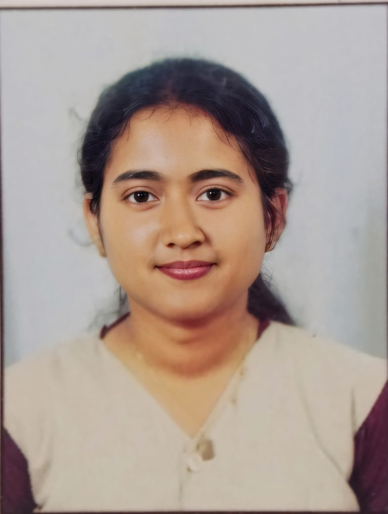

BIO-DATA

Personal Details
| Name | Charikshma K |
|---|---|
| Date of Birth | 14-08-2006 |
| Gender | Female |
| Nationality | Indian |
| Address | Kasaragod, Kumbla |
| Phone Number | +91 7012330496 |
| kcharikshma@gmail.com |
Educational Details
| Qualification | Institution | Board / University |
|---|---|---|
| B.E. - Computer Science Engineering | Vivekananda College of Engineering and Technology, Puttur | VTU, Belagavi |
| PUC / 12th | Government Higher Secondary School, Kumbla | State Board |
| SSLC / 10th | Shree Sharadamba Higher Secondary School, Sheni | State Board |
Hobbies and Interests
- Learning new technologies
- Listening to music
- Exploring creative ideas
Languages Known
- English
- Malayalam
- Kannada
- Hindi